- Strona główna
- Kursy i certyfikaty
Kursy i praktyka na żywo
Sam certyfikat z internetu to za mało, dlatego regularnie robię też kursy stacjonarne na żywo z diagnostyki i pracy z ciałem, żeby zdobywać praktykę. Do tego ponad 2000 godzin z ludźmi na sali.
Nie tylko kursy przed ekranem
Dwa kursy zrobiłem stacjonarnie, z wykładowcami obok. Tu nie da się przewinąć trudniejszego fragmentu.
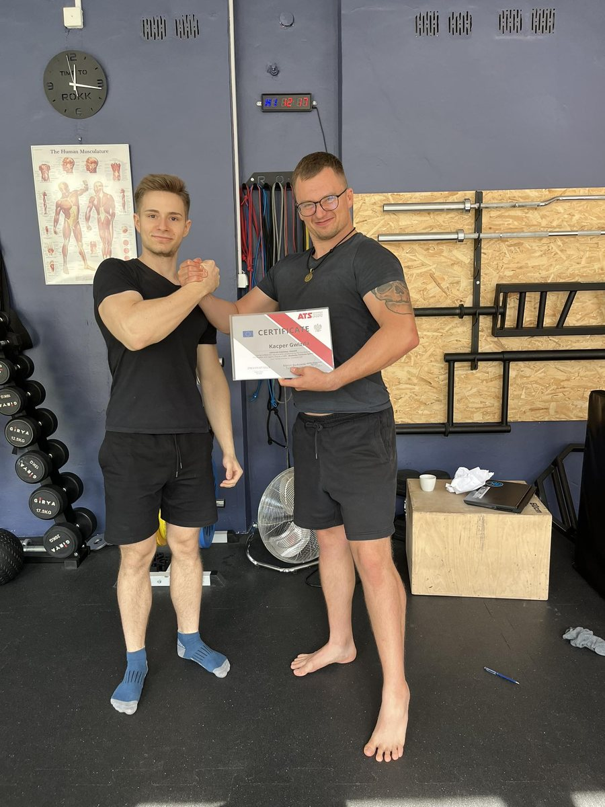
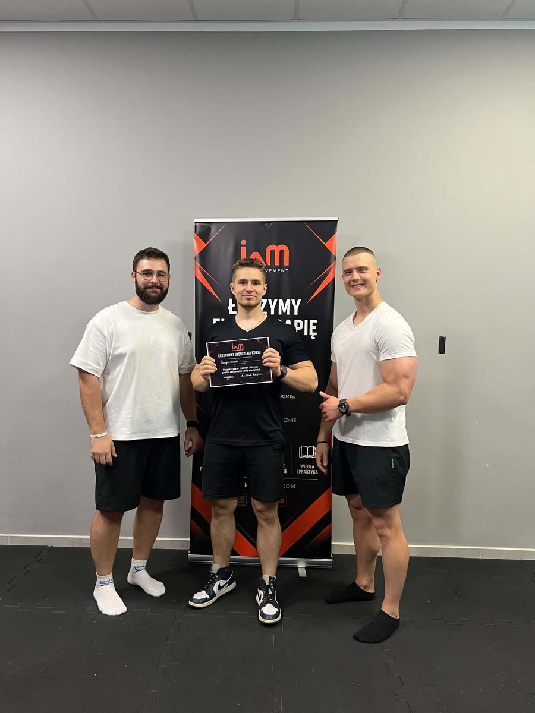
Co to zmienia dla Ciebie
Sam tytuł kursu nic Ci nie da, więc przy każdym piszę po ludzku, co z tego masz.
- 2023
Trener, specjalizacja: trener personalny i instruktor siłowniNa żywo
ATS-Sport, Akademia Trenerów SportuSolidna podstawa: jak budować trening, jak uczyć techniki i jak zadbać o Twoje bezpieczeństwo.
- Grudzień 2023
Programowanie treningu siłowego
Global Sport AcademyTwój plan nie jest przypadkowy. Wiem, czego, ile i kiedy dołożyć, żeby ciało się zmieniało.
- Marzec 2024
Prowadzenie dietetyczne krok po kroku
Global Sport AcademyUczę jeść tak, żeby nie chodzić głodnym i mieć siłę. Bez głodówek i bez jadłospisu z kosmosu.
- Marzec 2024
Suplementacja w sporcie
Global Sport AcademyPowiem Ci, co ma sens, a na co szkoda pieniędzy.
- Kwiecień 2024
Jak wykonać testy funkcjonalne w 15 minut
Global Sport AcademySprawdzam, jak się ruszasz i co Cię ogranicza, zanim dołożymy ciężaru.
- Czerwiec 2025
Prowadzenie klienta krok po kroku
Global Sport AcademyDokładnie to, czego potrzebujesz na starcie: spokojne wprowadzenie początkującego w świat siłowni.
- Grudzień 2025
Fundamenty 10XTraining
Naomi Fitness DesignSzkolenie stacjonarne i online. Różnorodny system treningowy, w którym odnajdzie się każdy.
- Grudzień 2025
Diagnostyka w pigułce
Global Sport AcademyDiagnostyka aparatu ruchu w praktyce. To na niej opieram dobór ćwiczeń dla Ciebie.
- 2026
Diagnostyka w treningu siłowym: pomiar ruchomości i siły mięśniowejNa żywo
IAM MovementMierzę, jak się ruszasz i ile masz siły, zamiast zgadywać, od czego zacząć.
Certyfikaty, które możesz obejrzeć
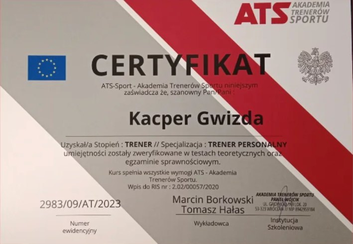
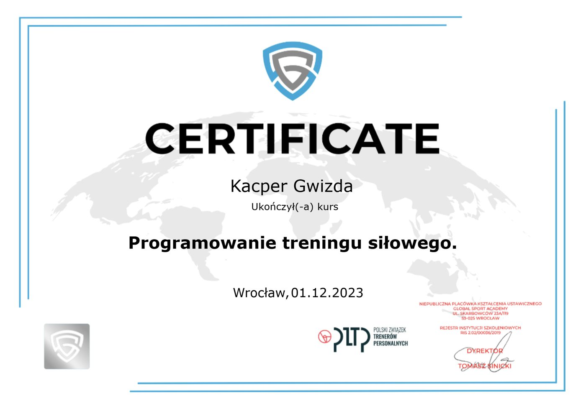
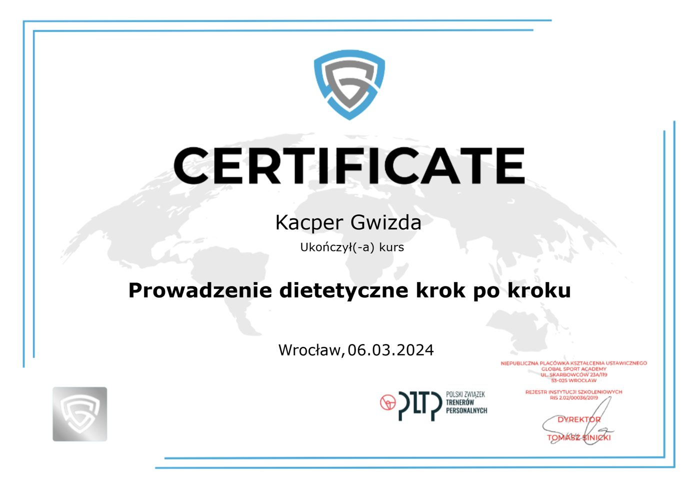
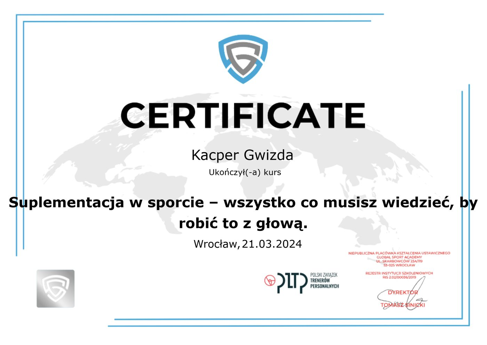
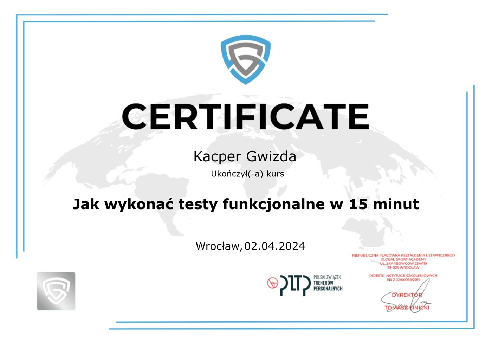
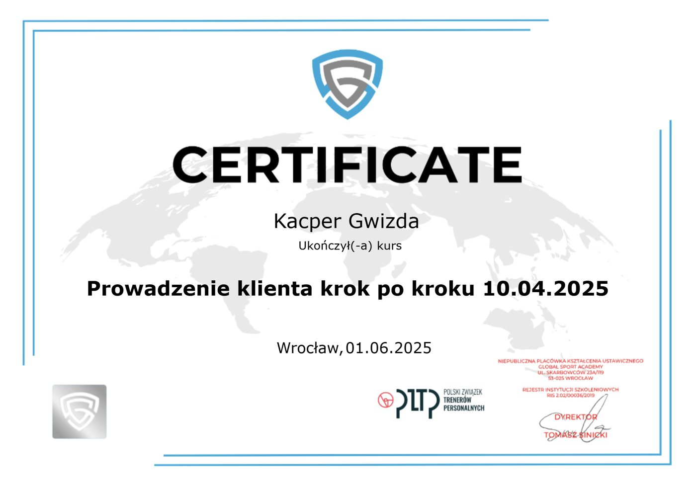
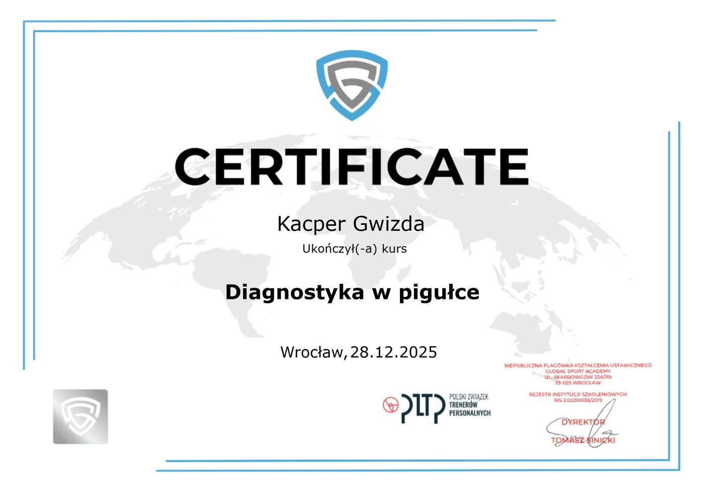
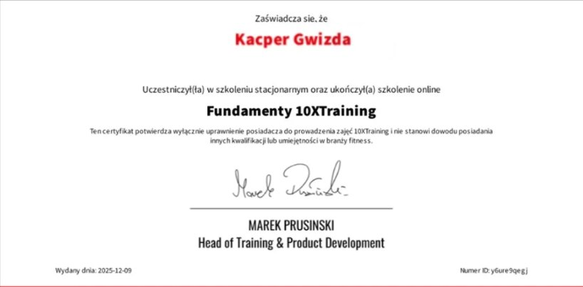
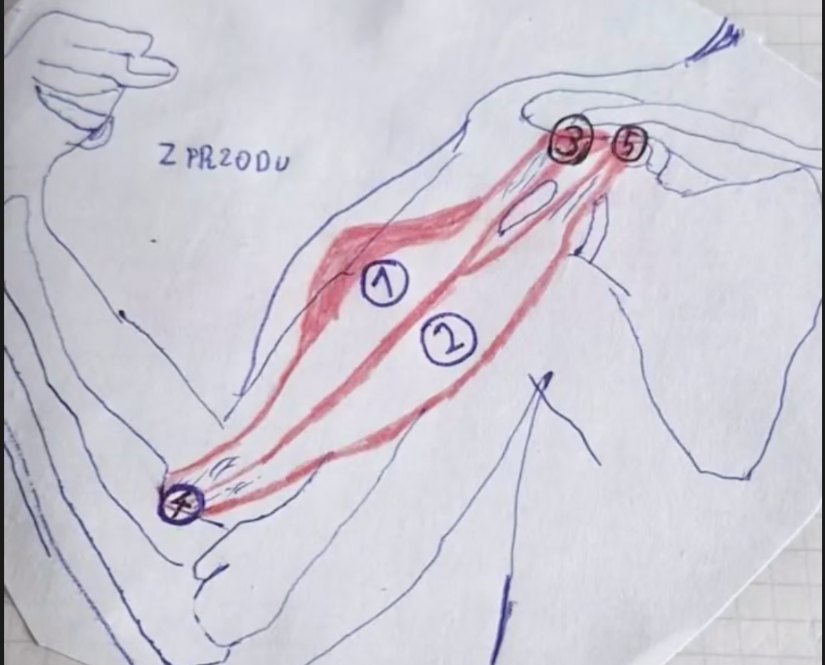
Rysuję każdy mięsień, żeby go zrozumieć
Może nie jestem artystą, ale te notatki robiłem tygodniami. Dzięki nim wiem, które ćwiczenie co naprawdę robi, i mogę dobrać je pod Twoje ciało, a nie pod modę z internetu.
Poznaj moją historię